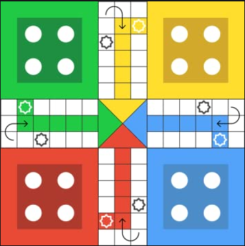
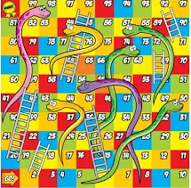
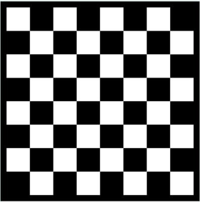

1. Ludo
Ludo is a strategy board game for two to four players, in which the players race their four tokens from start to finish according to the rolls of a single die.Special areas of the Ludo board are typically coloured bright yellow, green, red, and blue. Each player is assigned a colour and has four tokens in their colour.
Know More

2. Snakes and Ladders
It is played on a game board with numbered, gridded squares. A number of "ladders" and "snakes" are pictured on the board, each connecting two specific board squares. The object of the game is to navigate one's game piece, according to die rolls, from the start (bottom square) to the finish (top square), helped by climbing ladders but hindered by falling down snakes.
Know More

3. Chess
Chess is a two-player strategy board game played on a checkered board with 64 squares arranged in an 8×8 grid.Each player begins with 16 pieces: one king, one queen, two rooks, two knights, two bishops, and eight pawns. Each piece type moves differently, with the most powerful being the queen and the least powerful the pawn. The objective is to checkmate the opponent's king.In addition to checkmate, a player wins the game if the opponent resigns, or, in a timed game, runs out of time. There are also several ways that a game can end in a draw.
Know More